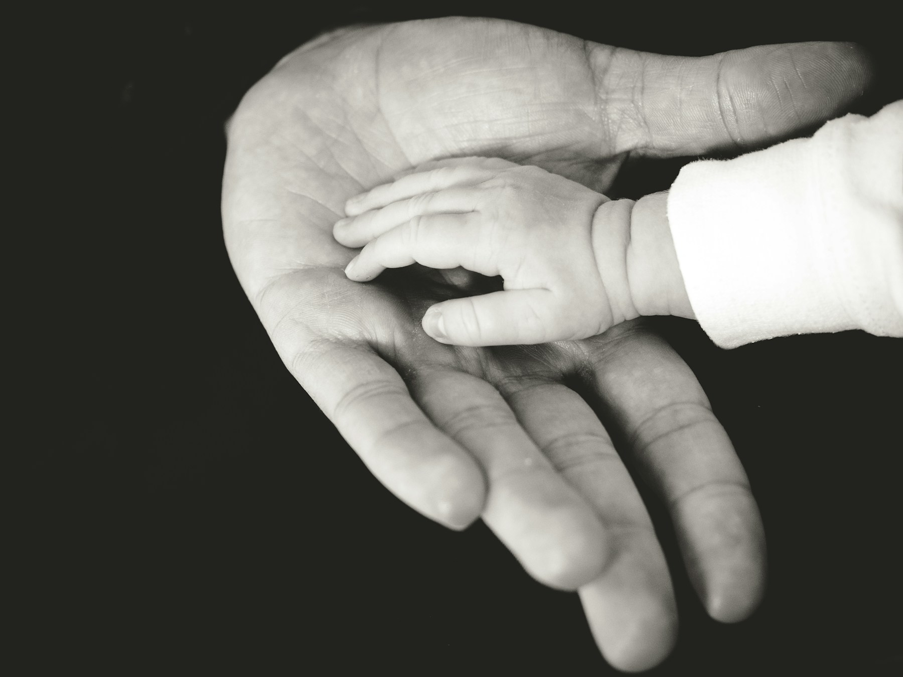

Expertgranskning
Oberoende genomgång av socialtjänstens utredningar, metodval, underlag och slutsatser.
Expertgranskning · Familjerätt · Socialt arbete
Oberoende, forskningsbaserad granskning av socialtjänstens utredningar i vårdnadstvister och LVU-ärenden.

Struktur, evidens och ett tydligt barnperspektiv.
Komplexa familjerättsliga frågor behöver granskas med både vetenskaplig noggrannhet och förståelse för människan bakom materialet.
Tjänster
Oberoende genomgång av socialtjänstens utredningar, metodval, underlag och slutsatser.
Forskningsbaserad analys av risk- och skyddsfaktorer i vårdnadstvister och barnavårdsärenden.
En fristående bedömning som synliggör styrkor, brister och centrala frågor i materialet.
Föreläsningar inom socialt arbete, psykologi, utredningsmetodik och familjerättsliga processer.
Leonard Ngaosuvan
Leonard Ngaosuvan är filosofie doktor och familjerättsforskare med särskild kompetens inom vårdnadstvister, riskbedömning och granskning av barnavårdsutredningar.
Clebo Consulting förenar samhällsvetenskaplig forskning med praktisk förståelse för utredningsprocessen. Målet är att göra komplexa underlag begripliga, synliggöra metodfrågor och ge ett sakligt beslutsunderlag.
Arbetssätt
Du beskriver ärendet och vilket material som finns. Uppdragets omfattning tydliggörs.
Underlaget granskas med fokus på metod, evidens, riskfaktorer, resonemang och slutsatser.
Du får en strukturerad bedömning som skiljer fakta, observationer och slutsatser åt.
Perspektiv
“En bra granskning handlar inte om att välja sida. Den handlar om att pröva om slutsatserna faktiskt bär.”
Kontakt
Beskriv kort vad ärendet gäller och vilket underlag som finns. All kontakt behandlas med diskretion.
Clebo Consulting AB
Org.nr 556986-9992